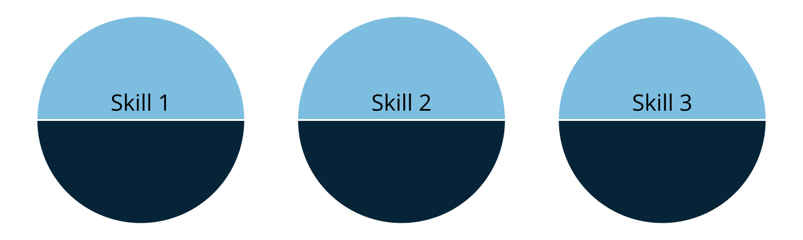
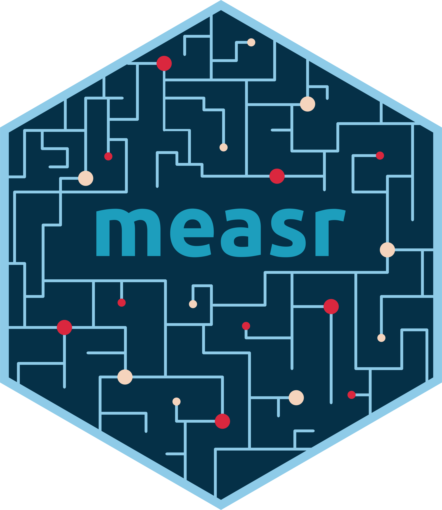

An R package for diagnostic classification models
W. Jake Thompson, Ph.D.

Attribute-level feedback about student learning is more actionable for instructional decision-making (Thompson & Clark, 2024)
However, the uniqueness and complexity of DCMs can create a “black box” for practitioners and stakeholders

library(dcmdata)
ecpe_data
#> # A tibble: 2,922 × 29
#> resp_id E1 E2 E3 E4 E5 E6 E7 E8 E9 E10 E11
#> <int> <int> <int> <int> <int> <int> <int> <int> <int> <int> <int> <int>
#> 1 1 1 1 1 0 1 1 1 1 1 1 1
#> 2 2 1 1 1 1 1 1 1 1 1 1 1
#> 3 3 1 1 1 1 1 1 0 1 1 1 1
#> 4 4 1 1 1 1 1 1 1 1 1 1 1
#> 5 5 1 1 1 1 1 1 1 1 1 1 1
#> 6 6 1 1 1 1 1 1 1 1 1 1 1
#> 7 7 1 1 1 1 1 1 1 1 1 1 1
#> 8 8 0 1 1 1 1 1 0 1 1 1 0
#> 9 9 1 1 1 1 1 1 1 1 1 1 1
#> 10 10 1 1 1 1 0 0 1 1 1 1 1
#> # ℹ 2,912 more rows
#> # ℹ 17 more variables: E12 <int>, E13 <int>, E14 <int>, E15 <int>, E16 <int>,
#> # E17 <int>, E18 <int>, E19 <int>, E20 <int>, E21 <int>, E22 <int>,
#> # E23 <int>, E24 <int>, E25 <int>, E26 <int>, E27 <int>, E28 <int>Results are typically reported as classifications on each of the assessed attributes
No scale score or ability continuum
Each repspondent receives a profile of mastered skills
| respondent | morphosyntactic | cohesive | lexical |
|---|---|---|---|
| 1926 | |||
| 493 | |||
| 1604 | |||
| 2414 | |||
| 2812 | |||
| 798 | |||
| 1735 | |||
| 1080 | |||
| 475 | |||
| 2319 | |||
| 1788 | |||
| 747 | |||
| 2691 | |||
| 965 | |||
| 1150 | |||
| 2343 | |||
| 1728 | |||
| 1554 | |||
| 2904 | |||
| 815 |
measr supports reporting the probability of mastery
Can be used to communicate confidence in classifications (Bradshaw & Levy, 2019)
measr_extract(ecpe_lcdm, "attribute_prob")
#> # A tibble: 2,922 × 4
#> resp_id morphosyntactic cohesive lexical
#> <chr> <dbl> <dbl> <dbl>
#> 1 1 0.997 0.967 1.000
#> 2 2 0.995 0.926 1.000
#> 3 3 0.984 0.991 1.000
#> 4 4 0.998 0.993 1.000
#> 5 5 0.989 0.984 0.962
#> 6 6 0.993 0.992 1.000
#> 7 7 0.993 0.992 1.000
#> 8 8 0.00478 0.488 0.967
#> 9 9 0.954 0.988 0.999
#> 10 10 0.659 0.112 0.0911
#> # ℹ 2,912 more rowsThe research reported here was supported by the Institute of Education Sciences, U.S. Department of Education, through Grants R305D210045 and R305D240032 to the University of Kansas Center for Research, Inc., ATLAS. The opinions expressed are those of the authors and do not represent the views of the Institute or the U.S. Department of Education.